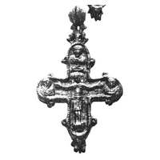
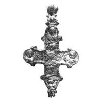

Catalog › CE-0635 · KOR2003-II.1.1.14
Encolpion cu inel biconic, în relief, valve găsite separat; Răstignire pe față, Odighitria pe revers
sec. nu mai târziu de prima treime XIII (1201–1300) · Vladimir pe Kliazma, Rusia · Centrul de Stat pentru evidența, utilizarea și restaurarea monumentelor de istorie și cultură din regiunea Vladimir (Goscentr), Vladimir, inv. В-93 (К-22)/292
double-sided reliquary cross (enkolpion), aramă; c. nu mai târziu de prima treime XIII (1201–1300); found at Vladimir pe Kliazma, Rusia; kept at Centrul de Stat pentru evidența, utilizarea și restaurarea monumentelor de istorie și cultură din regiunea Vladimir (Goscentr), Vladimir.




Identificare
- Categorie
- Encolpion bivalv (relicvar)
- Material
- Aramă
- Tehnică
- Turnare în relief
- Stare
- Întreagă
- Dimensiuni
- Î 85 × L 72 × Gr 4 mm
Iconografie
- Descriere avers
- Hristos răstignit ocupă centrul și capătul de jos al valvei de față; lemnul crucii redat prin elemente în relief ale stâlpului vertical (tăbliță și suppedaneum); la baza crucii golgotice capul lui Adam. În medalioane busturi frontale în relief ale unor sfinți, lipsite de detalii și neatribuibile cu precizie.
- Revers
- Maica Domnului cu Pruncul
- Descriere revers
- Pe capătul de jos, în centru, figura în relief a Maicii Domnului cu Pruncul (Odighitria), în picioare pe sol; în medalioane busturi frontale în relief ale unor sfinți, lipsite de detalii și neatribuibile cu precizie.
Datare și atribuire
- Datare
- sec. nu mai târziu de prima treime XIII (1201–1300)
- Centru
- Necunoscut
- Tipologie
- Korzukhina–Peskova 2003, tip II 1 1
Descoperire
- Localitate
- Vladimir pe Kliazma
- Țară
- Rusia
- Context
- Așezare
- Anul
- 1993
Păstrare și referințe
- Colecție
- Centrul de Stat pentru evidența, utilizarea și restaurarea monumentelor de istorie și cultură din regiunea Vladimir (Goscentr), Vladimir
- Nr. inventar
- В-93 (К-22)/292
- Bibliografie
- G. F. Korzukhina, A. A. Peskova, Древнерусские энколпионы. Нагрудные кресты-реликварии XI–XIII вв., Sankt-Petersburg, 2003 [Korzukhina–Peskova 2003], p. 63, cat. nr. II 1 1/14, reprodusă la Табл. 24 (planșe, p. 266). Bibliografie citată în sursă: Жарнов 1994, 61–62; Жарнов 1997, 82–93; Жарнов 2000, 183–193, рис. 3–5.
- Figura
- Табл. 24
- Planșe
- Korzukhina–Peskova 2003, Табл. 24 (planșă fără paginație proprie în PDF; p. 266 tipărită)
- Observații
- Datare după Peskova: sec. nu mai târziu de prima treime XIII. Circumstanțe: Săpături arheologice 1993 (Vetceanîi gorod); crucea adunată din două valve găsite la 70 cm una de alta în partea de jos a umpluturii pivniței unei locuințe arse în februarie 1238, din aceeași construcție provine un tezaur de obiecte de cult creștin; șef Iu. E. Jarnov. Dimensiuni: h 8,5–8,6 cm; l 7,2–7,4 cm; înălțimea valvelor 0,4–0,7 cm. Turnat în formă de lut (pe laturile valvelor se văd cusăturile îmbinării jumătăților unui original imprimat în lut); reliefuri retușate cu ciocănașul; ca modele au fost folosite cruci diferite (parametrii capetelor transversale, detaliile medalioanelor); analiză spectrală (Tabelul I, p. 64): aliaj bronz, Sn 24% (față), 26% (revers). Valva de revers adunată din fragmente (pierderi completate); înăuntru adâncitură repetând conturul crucii (0,1–0,2 cm), cu fund plat; inel de agățare în formă de mărgea biconică goală cu brâuri; medalioanele și marginea valvelor au guler în relief ornamentat cu «puncte» sau imitând o funie răsucită; inscripții explicative lipsesc. Coordonate: nu sunt date în sursă.
Citare: Corpus Encolpiorum, CE-0635, Encolpion cu inel biconic, în relief, valve găsite separat; Răstignire pe față, Odighitria pe revers, --root/piese/KOR2003-II.1.1.14/ (accesat 2026-10-17).